Softwares para edição de áudio e vídeo
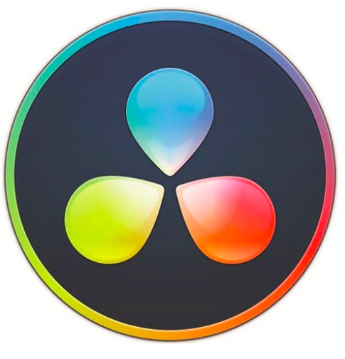
DaVinci Resolve
DaVinci Resolve (originalmente conhecido como da Vinci Resolve) é um aplicativo de correção de cores e edição de vídeo não-linear (NLE) para macOS, Windows e Linux, originalmente desenvolvido pela da Vinci Systems e agora desenvolvido pela Blackmagic Design. Além da versão comercial do software (conhecida como DaVinci Resolve Studio), a Blackmagic Design também distribui uma edição gratuita, com funcionalidade reduzida (anteriormente conhecida como DaVinci Resolve Lite).
O software inclui módulos para edição de vídeo, correção de cor, mistura de áudio / efeitos (incluindo Fairlight) e efeitos visuais (incluindo Fusion). Ele pode ser usado como intermediário entre outro software NLE e o software de criação de Pacote de Cinema Digital (DCP), ou como um aplicativo de ¬¬edição de vídeo end-to-end independente. Para a entrega de conteúdo para serviços como Netflix, o Resolve fornece funcionalidade para criar e validar pacotes IMF (Interoperable Master Format, padronizado por SMPTE), conhecidos como IMPs (que compreendem vários componentes, como conteúdo MXF, uma composição (CPL) e dados do pacote XML), sem o uso de software DCP separado.
Formatos de arquivo compatíveis incluem formatos de vídeo como AVI, MP4, QuickTime, DNxHD, e XAVC ; formatos de troca de dados, tais como XML, EDL, AAF, DCP, MXF, e CinemaDNG ; formatos de áudio como AAC, AIFF, e WAVE ; e formatos de imagem como RAW, OpenEXR, TIFF, DPX, R3D, JPEG, e JPEG 2000. Os tipos de plug-ins suportados incluem OpenFX, VST, e AU.
partir da versão 12.2 (dezembro de 2015), Resolve inclui suporte para o padrão Hybrid Log-Gamma (HLG) para uma faixa dinâmica alta.] Outros recursos suportados incluem o OpenCL e o Intel Quick Sync Video. Começando com a ferramenta mais poderosa da lista, o DaVinci Resolve é um programa profissional para edição de vídeos, correção de cores e pós- produção, com recursos para efeitos especiais e até edição de áudio. A versão gratuita deixa de lado opções mais avançadas como alguns filtros e efeitos, edição de vídeos 3D e trabalho colaborativo. O DaVinci Resolve é desenvolvido pela BlackMagic, conhecida por outros softwares profissionais de vídeo e captura, e possui versões para Windows, Mac e Linux, além de compatibilidade com projetos do Final Cut Pro, Adobe Premiere e Avid Media Composer. Apesar de não ser o programa mais fácil de usar da lista, é o que oferece maior possibilidade de expandir sua técnica e suas produções.
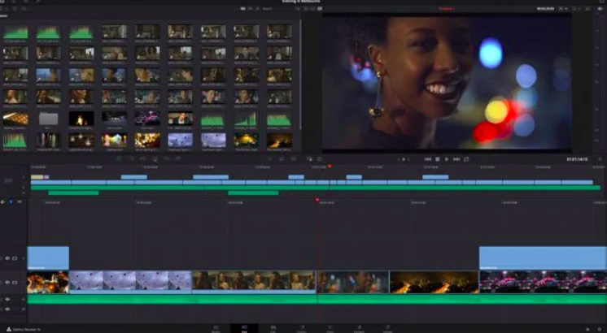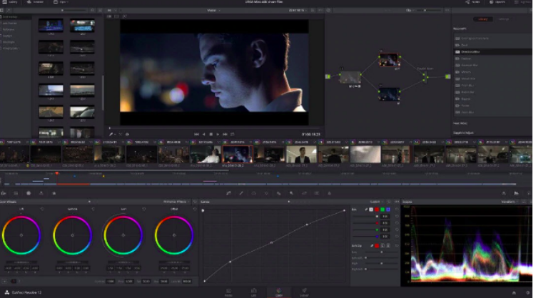
• Formatos suportados: ARI, MTS, MXF, AVI, CIN, DNG, DPX, CDX, MP4, MXF, EXR, MOV
• Vantagens: Qualidade de imagem impressionante. A correção de cores e a edição de áudio também são excelentes no Davinci Resolve.
• Limitações: A curva de aprendizado é mais acentuada para iniciantes.
Diponível para: Windows | macOS | Linux
Lightworks
O Lightworks é um sistema de edição não-linear profissional (NLE) para edição e masterização de vídeo digital em vários formatos, incluindo resoluções de 2K e 4K, e televisão nos formatos PAL, NTSC e de alta definição. Foi um dos primeiros desenvolvedores de sistemas de edição não-linear baseados em computador e está em desenvolvimento desde 1989 e ganhou um prêmio EMMY de 2017 por ser pioneiro na edição digital não-linear.
O Lightworks tem milhões de adotantes em todo o mundo devido ao software estar disponível em três plataformas: Windows, Mac e Linux. O desenvolvimento de uma versão de código aberto foi anunciado em maio de 2010. Nenhum código fonte do programa foi lançado ainda.
É um editor gratuito para quem precisa de uma ferramenta com recursos mais elaborados do que os presentes no Movie Maker. Os criadores do software o classificam como uma ferramenta de edição profissional aberta para todos.
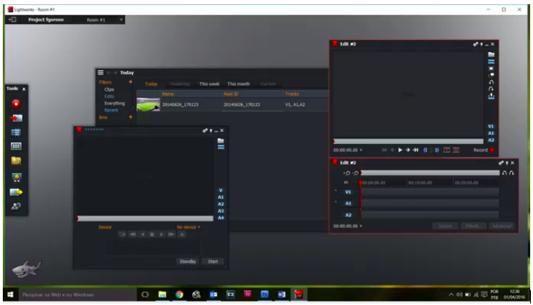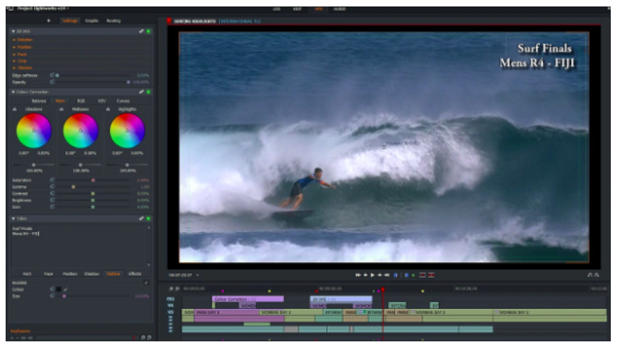
• Formatos de entrada: Os mais recentes formatos de áudio e vídeo
• Formatos de saída: MP4, MXF, QuickTime, AVI, MTS, MPG, M2T
• Vantagens: Interface bem projetada com muitos recursos avançados.
• Limitações: não é fácil de usar para iniciantes.
Diponível para: Windows | macOS | Linux
Inshot
Muito simples de usar, o InShot é um dos apps favoritos para dar aquela turbinada nas redes sociais. Com diversas ferramentas, o app permite, por exemplo, adicionar efeitos especiais, montagens, legendas e emojis. É possível também escolher a trilha sonora diretamente da biblioteca de música.
A própria tarefa de edição fica fácil, podendo-se inserir cortes de maneira simples e rápida, assim como incluir ou mesclar vídeos gravados em momentos diferentes.
Importante: na versão gratuita, o aplicativo adiciona uma pequena marca d'água nos vídeos, que sempre pode ser removida caso assista a uma propaganda.
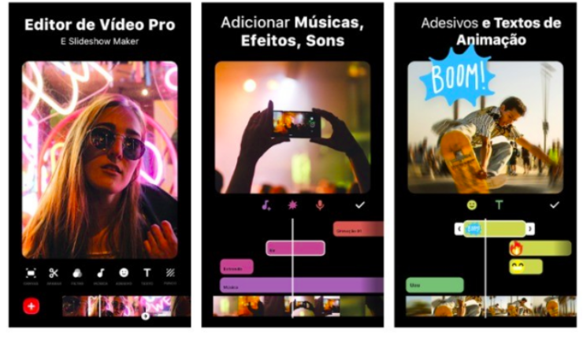• Vantagens: Fácil de usar, Permite editar fotos e vídeos, posta fotos e vídeos retangulares no Instagram, Oferece filtro e bordas e um ótimo desempenho.
• Limitações: Limitado em certos aspectos de edições.
Diponível para: Andorid | iOS
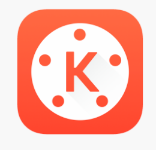
KineMaster
KineMaster é uma app de edição de vídeo disponível gratuitamente para Android e iOS. As suas funcionalidades são bastante completas e poucos minutos de utilização são suficientes para perceber como tudo funciona. Além das possibilidades de corte, colagem, controlo da velocidade dos clipes, adição de música entre muitas outras, o grande destaque vai para a possibilidade de adicionar múltiplas camadas de vídeo, imagem, adesivos, texto, anotações à mão, e tudo isto, adicionado de forma muito intuitiva.
Algumas de suas funcionalidades:
Múltiplas camadas para vídeo, imagens, adesivos, texto, escrita à mão em videoclipes; Corte, recorte e colagem frame a frame;
Pré-visualização a qualquer momento;
Controles de tonalidade, brilho e saturação;
Controle de velocidade para videoclipes;
Som com fade in/fade out (geral);
Efeitos de transição (como transições 3D, wipes, fades e outros);
Vários temas, animações e efeitos visuais e de áudio;
Partilha nas redes sociais.
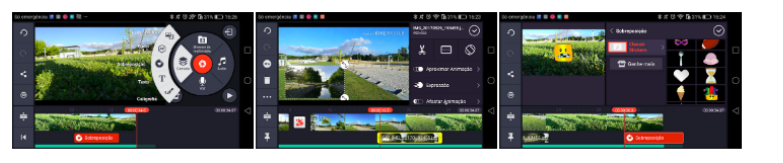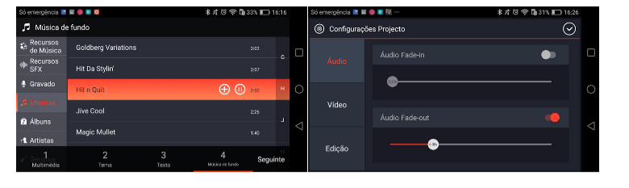
• Formatos de entrada: Os mais recentes formatos de áudio e vídeo.
• Formatos de saída: MP4, AVI, MTS, MPG, M2T.
• Vantagens: Interface bem projetada com muitos recursos avançados, fácil uso, temas muitos bonitos, ferramentas muitos úteis, insere clipe de aúdio, renderiza rapidamente, resultado final satisfatório.
• Limitações: Precisa realizar assinatura mensal ou anual para retirar marca d’água dos vídeos.
Diponível para: Android | iOS
Blender
Blender, também conhecido como blender3d, é um programa de computador de código aberto, desenvolvido pela Blender Foundation, para modelagem, animação, texturização, composição, renderização, e edição de vídeo. Está disponível sob a GNU GPL, versão 2 ou posterior. O Blender possui ainda partes licenciadas sob a Python Software Foundation License.
O programa é multiplataforma, estando portanto disponível para diversos sistemas operacionais. O Blender implementa ferramentas similares às de outros programas proprietários, que incluem avançadas ferramentas de simulação, tais como: dinâmica de corpo rígido, dinâmica de corpo macio e dinâmica de fluidos, ferramentas de modelagem baseadas em modificadores, ferramentas de animação de personagens, um sistema de composição baseado em “nós” de texturas, cenas e imagens, e um editor de imagem e vídeo, com suporte a pós-produção. Inclui suporte a Python como linguagem de script. Atualmente, suporta 25 idiomas, incluindo o português brasileiro.>
Blender possui muitos recursos avançados, como ferramentas de modelagem baseadas em modificadores, poderosas ferramentas de animação de personagens, um material baseado em nós, etc. e é um dos melhores editores de vídeo para Windows, LInux e Mac.
Como usuário iniciante, é difícil de usar, pois é projetado para profissionais. É totalmente gratuito para usar e distribuir. A interface é personalizável e flexível nas configurações de cores. Por outro lado, se você é um semi-profissional ou deseja melhorar sua edição de vídeo para um nível superior, este editor de vídeo gratuito é o melhor para você. O problema é que você precisa gastar muito tempo e energia para aprender. 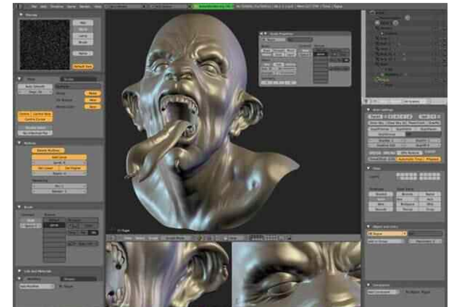• Formatos de entrada: Os mais recentes formatos de áudio e vídeo.
• Formatos de saída: .MOV, .MPEG4, .MP4, .AVI, .WMV, .MPEGPS, .FLV, 3GPP, WebM.
• Vantagens: Muitos recursos avançados, perfeitos para usuários avançados.
• Limitações : A curva de aprendizado é mais acentuada para iniciantes; Recursos de aprendizado muito limitados, não há tradução para o português.
•Diponível para: Windows | macOS | Linux
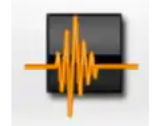Wave Editor
O software é muito amigável para iniciantes . Desde seu processo de instalação até sua interface fácil, o Wave Editor foi projetado para ser capaz de acomodar até mesmo a pessoa com mais desafios tecnológicos. A instalação é muito fácil. Não há confusão envolvida com a coisa toda. Basta um download rápido e alguns cliques e tudo estará instalado e funcionando em nenhum momento.
Design e a interface do programa também são muito adequados para iniciantes. A única coisa que ocupa a maior parte da tela é a janela onde você pode ver a forma de onda do áudio. No topo dessa janela está uma barra de menu com outra barra abaixo contendo ícones de comando.
Abaixo da janela de visualização da forma de onda está o menu de opções. Nesses menus, você pode selecionar o início e o fim do clipe de som que deseja editar. Há também uma exibição de cursor onde ele informa a hora exata no arquivo de áudio onde o cursor está localizado. Abaixo disso está uma exibição de níveis. Quando o arquivo de áudio estiver sendo reproduzido, o visor de níveis mostrará o quão alto ou baixo é o arquivo de áudio. Finalmente, há o controle deslizante Volume, onde os usuários podem editar o volume do arquivo de áudio.
Edição de áudio simples
Quando digo que a edição de áudio é simples com o Wave Editor, quero dizer isso de uma forma negativa e positiva. Em primeiro lugar, os recursos do Wave Editor não são para pessoas que precisam de edições pesadas. Você não terá muita liberdade quando se trata de ajustar os mínimos detalhes do arquivo de áudio que possui. Além disso, não espere realmente controlar os tons e a frequência do áudio que você está editando.
Dito isso, é realmente bom no que faz, desde que você não defina suas expectativas muito altas. Isso pode reduzir o volume do áudio. Também pode adicionar silêncio . É irritante que seja medido em milissegundos, no entanto. Você também pode adicionar um efeito fade in e fade out. O processo de edição de áudio em si também é muito simples. Tudo o que você precisa fazer é selecionar a parte necessária diretamente no visualizador da forma de onda e aplicar o efeito desejado.
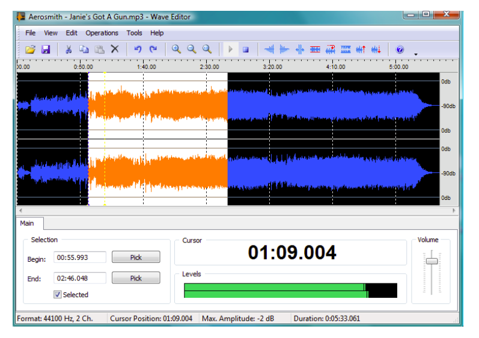• Vantagens: Instalação rápida; amigo do usuário, bom para iniciantes e suporta vários formatos de arquivos.
• Limitações : Comandos redundantes, não é compatível com alguns formatos de arquivos e tem um limite de tamanho de arquivo
Diponível para: Windows
Comentários